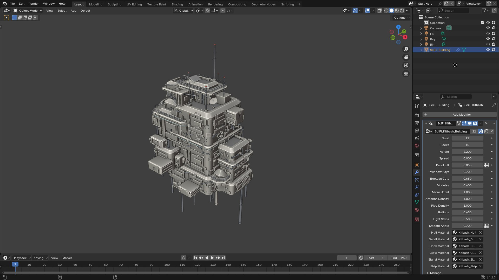
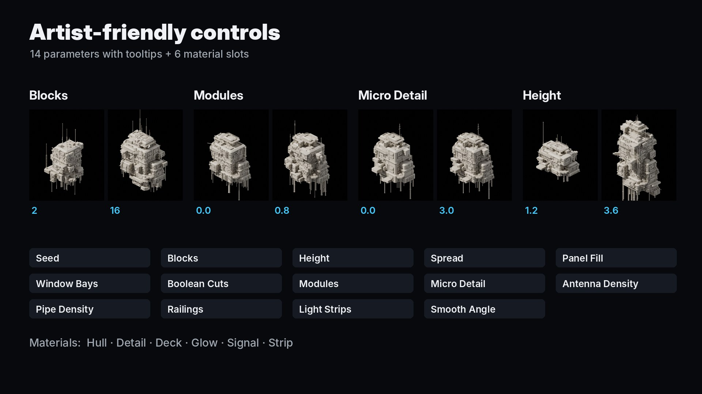
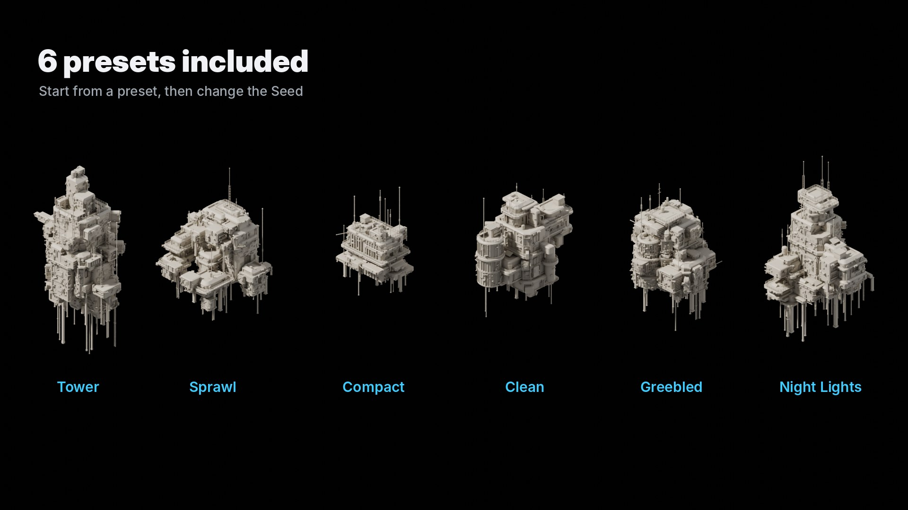
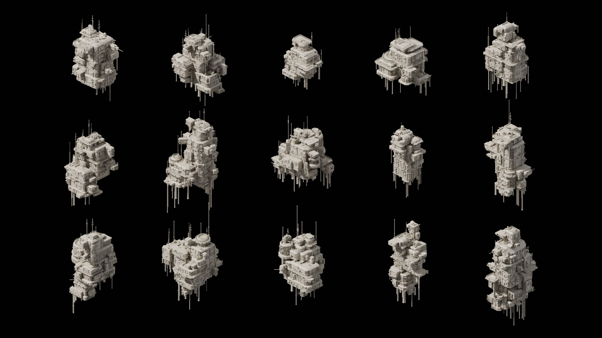
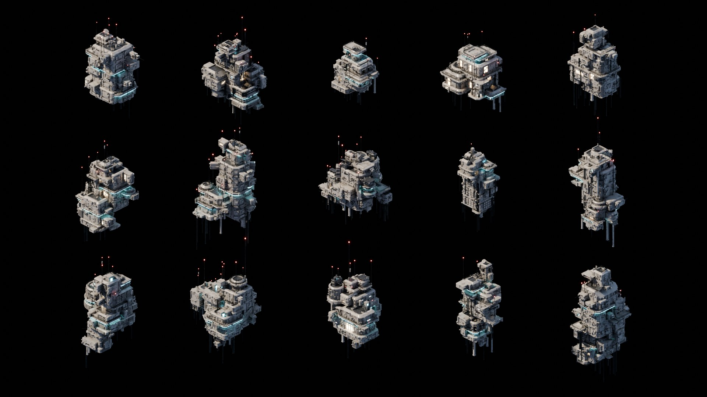
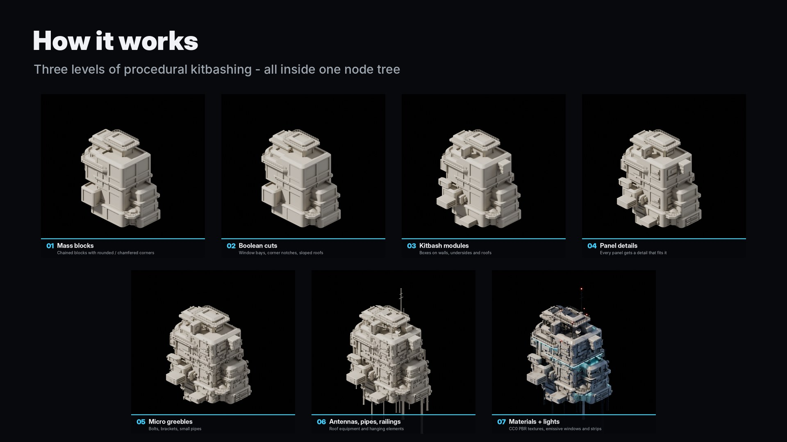

| File | What it is |
|---|---|
| SciFi_Kitbash_Generator.blend | The SciFi_Kitbash_Building node group (marked as an asset), the materials with packed textures, and three scenes: Start Here, Presets and Showcase Grid. |
| blender_assets.cats.txt | Asset catalog, so the node group appears under SciFi Kitbash in the Asset Browser. |
| Documentation.pdf | An illustrated version of this page. |
| README.txt, LICENSE.txt, CREDITS.txt | Short guide, license and texture credits. |
Requires Blender 4.2 LTS or newer; tested with 4.2.3, 4.5 LTS and 5.2 LTS. There is nothing to install: the generator is a plain Geometry Nodes node group, with no add-on and no Python.
SciFi_Kitbash_Generator.blend. The Start Here scene contains a ready building.
The other scenes in the file are Presets (six ready configurations) and Showcase Grid (fifteen buildings).
SciFi_Kitbash_Generator.blend › NodeTree › SciFi_Kitbash_Building.| Parameter | Default | What it does |
|---|---|---|
| Seed | 0 | Random seed. Every value gives a completely different building. |
| Blocks | 6 | Number of main mass blocks: overall size and complexity. |
| Height | 2.2 | Height of the main tower in meters; the other blocks scale with it. |
| Spread | 1.0 | How far attached blocks reach out from their parent block. |
| Panel Fill | 0.85 | Chance that a wall panel receives a detail (vents, windows, doors, plates…). |
| Window Bays | 0.7 | Chance of boolean-cut window bays on each block. |
| Boolean Cuts | 0.65 | Chance of corner notches and sloped roof cuts on each block. |
| Modules | 0.4 | Density of secondary kitbash boxes on walls, undersides and roofs. |
| Micro Detail | 1.0 | Density of tiny greebles: bolts, brackets, small pipes and vents. |
| Antenna Density | 1.0 | Antennas, dishes and rooftop equipment. |
| Pipe Density | 1.0 | Hanging pipes, columns and wall pipes. |
| Railings | 0.45 | Chance of railings around roof edges. |
| Light Strips | 0.5 | Chance of emissive light strips under ledges. |
| Smooth Angle | 0.7 | Auto smooth angle in radians; sharper edges stay hard. |

The Presets scene holds six ready configurations: Tower, Sprawl, Compact, Clean, Greebled and Night Lights. Start from the one closest to what you need, then change the Seed.
To use a preset on your own object, select your object, then the preset object last, and use Object › Link/Transfer Data › Copy Modifiers.

| Slot | Default material | Used for |
|---|---|---|
| Hull | Kitbash_Hull | Main surfaces: cream painted metal (PaintedMetal012 + Concrete034) |
| Detail | Kitbash_Detail | Pipes, antennas, railings and dark parts (Metal029) |
| Deck | Kitbash_Deck | Recessed roof floors and solar panels (MetalPlates001) |
| Glow | Kitbash_Glow | Window glass, lit at random per window (emission) |
| Signal | Kitbash_Signal | Red lamps on antenna tips (emission) |
| Strip | Kitbash_Strip | Cyan light strips, hatch rings and indicator lights (emission) |
Kitbash_Clay.
Cycles is recommended. The materials use the Bevel and Ambient Occlusion shader nodes, which are Cycles features. EEVEE works too, but without the rounded-edge highlights.
For clean isometric shots, use the orthographic camera from the Start Here scene.

The building is generated in three levels of kitbashing, all inside the node tree, with no external meshes, add-ons or scripts.
Ray casts remove details that would end up inside another block or under an overhang.

No. It is a plain Geometry Nodes node group.
Make sure the six material slots of the modifier are filled (they are by default). In Solid view, set Viewport Shading › Color to Material.
Yes: renders, films, games and client work are all fine. Reselling or redistributing the generator itself (the .blend file or the node group) is not allowed.
The generated mesh has no UV map. The included materials use box projection; for game export, apply the modifier and use Smart UV Project.
Blender 4.2 LTS and newer. Tested with 4.2.3, 4.5 LTS and 5.2 LTS.
Textures: PaintedMetal012, Concrete034, Metal029 and MetalPlates001 from ambientCG.com (CC0 1.0). Everything else was built procedurally for this product. See LICENSE.txt in the download for the full license.